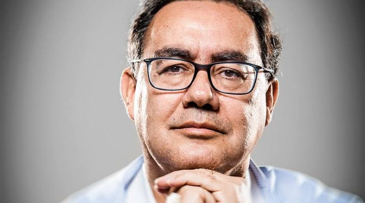

Augusto Cury é candidato pelo partido Avante. Seu plano de governo apresenta propostas com foco em educação, saúde emocional, empreendedorismo, tecnologia e reformas institucionais.
Entre as propostas apresentadas estão a criação de escolas de empreendedorismo, maior utilização de inteligência artificial na administração pública e mudanças institucionais, incluindo a proposta de adoção do semipresidencialismo e mandato de oito anos para ministros do Supremo Tribunal Federal.
Augusto Cury é candidato à Presidência pelo Avante. Seu programa reúne 18 projetos e inclui propostas de mudanças institucionais, educação, empreendedorismo e tecnologia.
O programa propõe a criação de um Ministério do Empreendedorismo e da Economia Distribuída, além de um Banco do Empreendedor e programas de crédito para pequenos empreendedores.
Uma das principais propostas é o Tele Saúde Brasil, uma plataforma pública de medicina digital para ampliar o atendimento e reduzir a pressão sobre o SUS. O programa também propõe ações de prevenção e rastreamento de diferentes tipos de câncer.